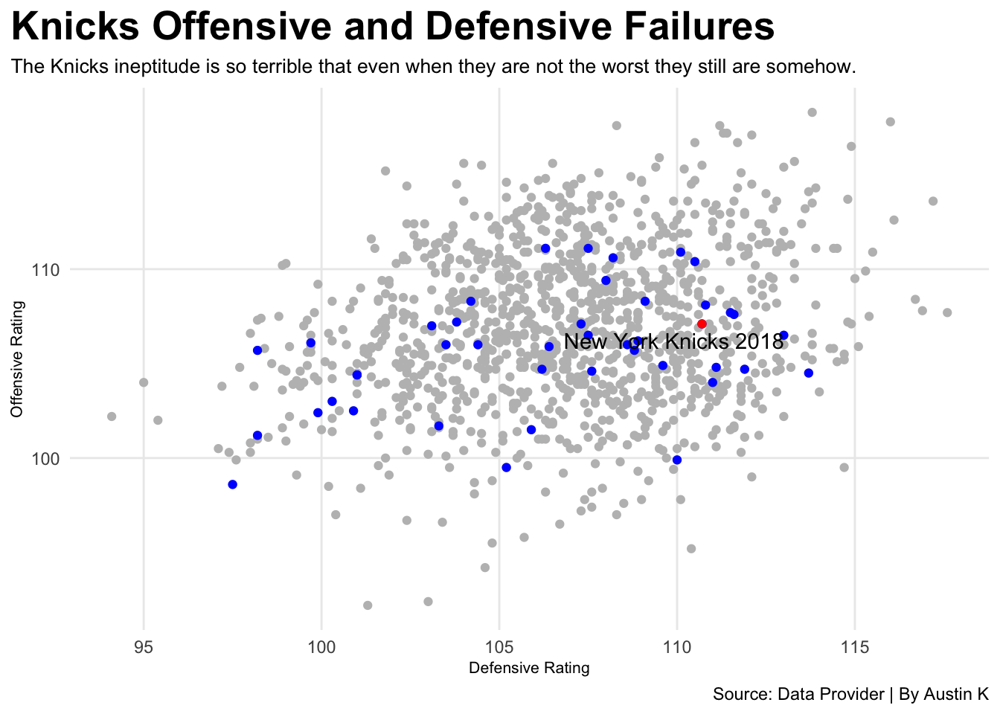

── Column specification ────────────────────────────────────────────────────────
Delimiter: ","
chr (2): team, arena
dbl (25): rk, age, w, l, pw, pl, mov, sos, srs, o_rtg, d_rtg, n_rtg, pace, f...
ℹ Use `spec()` to retrieve the full column specification for this data.
ℹ Specify the column types or set `show_col_types = FALSE` to quiet this message.
NYK <- Knicks %>%filter(team =="New York Knicks")ggplot() +geom_point(data=Knicks, aes(x=d_rtg, y=o_rtg), color="grey") +geom_point(data=NYK, aes(x=d_rtg, y=o_rtg), color="blue") +geom_point(data=OffRtg, aes(x=d_rtg, y=o_rtg), color="red") +geom_text_repel(data=OffRtg, aes(x=d_rtg, y=o_rtg, label=TeamSeason)) +labs(x="Defensive Rating", y="Offensive Rating", title="Knicks Offensive and Defensive Failures", subtitle="The Knicks ineptitude is so terrible that even when they are not the worst they still are somehow.", caption="Source: Data Provider | By Austin K" ) +theme_minimal() +theme(plot.title =element_text(size =20, face ="bold"),axis.title =element_text(size =8), plot.subtitle =element_text(size=10), panel.grid.minor =element_blank(),plot.title.position ="plot" )

playoffs <- NYK %>%filter(season ==1994| season ==1995| season ==1980| season ==1982| season ==1983| season ==1987| season ==1988| season ==1989| season ==1990| season ==1991| season ==1992| season ==1993| season ==1996| season ==1997| season ==1998| season ==1999| season ==2000| season ==2003| season ==2010| season ==2011| season ==2012| season ==2020)bad <- NYK %>%filter(season ==2018)ggplot() +geom_bar(data=NYK, aes(x=season, weight=w),fill="grey") +geom_bar(data=playoffs, aes(x=season, weight=w),fill="blue") +geom_bar(data=bad, aes(x=season, weight=w),fill="orange") +labs(x="Season", y="Wins", title="Knicks used to be good", subtitle="The Knicks are literally bad for your mental health, stop watching them.", caption="Source: Data Provider | By Austin K" ) +theme_minimal() +theme(plot.title =element_text(size =20, face ="bold"),axis.title =element_text(size =8), plot.subtitle =element_text(size=10), panel.grid.minor =element_blank(),plot.title.position ="plot" )